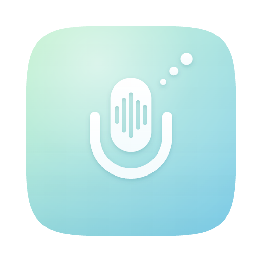

Speak and it lands at your cursor.
A macOS menu-bar dictation app. Hold the global shortcut and talk; Sogon transcribes it, optionally cleans it up with an LLM, and puts it where your cursor was when you started.
brew install --cask ddiiwoong/tap/sogon
Not using Homebrew? Grab Sogon.dmg from the latest release. It is a public release, so there is no sign-in.
Sogon notes where focus was when you started and goes back there right before typing. Editors like Kiro and VS Code get their input focus back. Grant the Automation permission and it also finds the Chrome tab and field, or the iTerm2 session, down to the tmux window and pane.
Start the next recording while the last one is still being corrected. Transcription and correction overlap, but the text reaches your cursor in order.
MLX Audio or WhisperKit does the speech recognition on this Mac. LLM correction defaults to None, and a cloud provider only gets used if you pick one.
Type or paste into the ⌃⇧T window and the text is corrected and sent to your cursor. You can dictate into that window too, fix it by hand, then submit.
Register a mapping like 스텝 펑션 → Step Functions and it is applied right after transcription, no LLM involved. There is a bundled dictionary of 142 Cloud and IT terms across 18 topics.
Press ⌃⇧⌫ while recording or transcribing and nothing gets typed. esc is not used for canceling, because other apps need it.
⌘C to translateSelect text and hit ⌘C twice quickly. Korean becomes English, English becomes Korean, shown beside the original. The default engine is Apple Translation, which runs on this Mac. It watches every ⌘C, so it ships turned off.
⌃⇧C action gridOne key applies correction, structuring, translation, case conversion, send-to-Notes or ask-a-CLI to the selection. Rewrites are shown before anything is replaced.
⌃⇧V snippetsSave the text you retype all the time, like an account number, an address or an English signature, and insert it by name. Snippets go in exactly as saved, with no correction pass.
⌃⇧S to ask about the screenGrab part of the screen and say your question. The image goes into your agent or chat box first, then the corrected text. Off by default.
Separate from dictation, one session records for up to 3 hours. The default is to record first and transcribe once the meeting is over.
The audio is kept, so transcription is not slowing your Mac down during the call. You can re-transcribe the same audio later with a better model.
One session gives you minutes with a summary, decisions and action items, and separately a verbatim transcript with nothing summarized. Export either as .txt or .md, or send it to Apple Notes.
Your voice and the far end of the call go on separate tracks. When both are captured the transcript is labeled [마이크] (mic) and [시스템 오디오] (system audio).
On macOS 26 and later this happens on your Mac. With AWS Transcribe on it tells up to 30 people apart, and you can name each speaker.
Import up to 20 files at once across 9 formats including mp3, m4a, wav, mp4 and mov, transcribed the same way as a meeting session.
Press ⌃⇧D mid-session to add dictation. The meeting keeps recording and only the dictated text goes to your cursor.
This is a public release, so there is no sign-in. Grab Sogon.dmg from the v0.31.6 release, open it, and drag Sogon.app into /Applications. The build is signed with a Developer ID and notarized by Apple, so Gatekeeper lets it open without a warning. The user guide covers permissions and your first dictation in order.
On Homebrew it is one line: brew install --cask ddiiwoong/tap/sogon. After that Sogon updates itself, so you will not need brew upgrade.
| Item | Requirement |
|---|---|
| macOS | 14 (Sonoma) or later |
| Chip | Apple Silicon (arm64) only |
| Permissions | Microphone · Accessibility (shortcuts and pasting) · Screen Recording (only for system audio) |
| Updates | Checked at launch. When a new version exists a window appears; one click installs it and relaunches the app. |
Sogon never asks for a permission on its own. The system dialog shows up only when you press a permission button in the quick controls or in Settings.
| To | Do this |
|---|---|
| Dictate | Hold ⌃⇧R, speak, and let go |
| Correct without speaking | ⌃⇧T |
| Translate a selection | ⌘C twice (after turning it on in Settings) |
| Act on a selection | ⌃⇧C |
| Insert a saved phrase | ⌃⇧V |
| Record a meeting | Menu bar icon → Start Recording (transcribe later) |
| Cancel | ⌃⇧⌫ |
| See results | Settings → History |
Stop Recording in the quick controls stops the session. To end only the dictation, press ⌃⇧D again. You cannot start a session while dictating, so start the session first.
Transcription and correction engines switch without restarting the app.
| Stage | Options |
|---|---|
| Transcription (STT) | MLX Audio (local) · WhisperKit (local, CoreML/ANE) · Groq Cloud |
| Correction and translation (LLM) | None (default) · Amazon Bedrock (Nova, Claude) · Anthropic Claude · Google Gemini · OpenAI · Groq · Local MLX |
| Correction mode | Standard · Filler Removal · Structured · Custom (prompt template) |
| Meeting speakers | On your Mac (macOS 26+) · AWS Transcribe (optional) |
In Standard and Filler Removal modes, a correction that changes more than half the words is discarded and the original goes in instead.
Bugs, things that don't work, and things you wish existed go in GitHub issues. A GitHub account is all you need; there is nothing else to sign up for.
Your macOS version and Sogon version (at the bottom of Settings), how to get there, and what you expected versus what happened. You do not need to include any dictated text or meeting content.
For anything reproducible, attaching a diagnostics file is much faster. Turn on Record debug log in Settings → General → Diagnostics, reproduce it once, then export. Dictated and translated text is never in it. The steps are in Sending diagnostics.
Issues are public, so leave out anything you cannot share. Troubleshooting covers the common symptoms first.